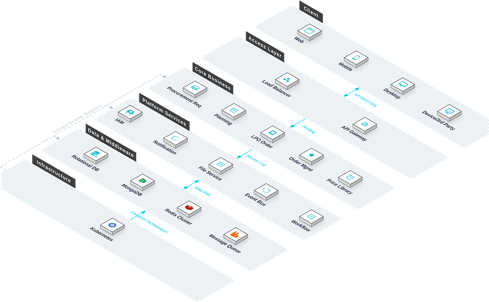

The Procurement Management System is an end-to-end procurement platform for engineering projects. Addressing the pain points of overseas engineering projects in West Africa — large volumes of cross-border procurement, scattered requirements, slow approvals, and opaque pricing — the system integrates requisition aggregation, planning, multi-level review, supplier negotiation, LPO issuance, and supplier management. It achieves end-to-end procurement digitalisation, helping enterprises optimise procurement decisions, reduce supply-chain risks, and improve capital efficiency.

Key Features
The system covers requisition, planning, review, negotiation, LPO management, expense documents, and price library — full-process core modules.
Procurement Requisition
Centralised display of all project-level purchase requests.
Planning
Aggregate requirements into procurement plans with budget, timeline, and responsible persons.
Review
Push procurement plans and LPOs to designated managers for step-by-step approval per preset workflow.
Negotiation
After plan approval, negotiate with potential suppliers to confirm actual prices and supplier details.
LPO Management
Generate formal LPOs from negotiation results and issue to selected suppliers, supporting LPO review, cancellation, and status tracking.
Expense Documents
Generate expense documents from approved LPOs covering planning orders, LPOs, and inbound orders, with batch print. The system does not display paid status — payments are completed offline.
Price Library
Record historical procurement prices for all materials, providing reference for planning and negotiation.
System Architecture

Application Scenarios
Suitable for multi-project procurement aggregation, planning and review control, supplier negotiation, and LPO & expense document management.

Multi-Project Requisition Aggregation
Centralised display of all project-level purchase requests with multi-dimensional filtering and analysis.

Planning & Review Control
Aggregate requirements into plans with budget and milestones, push for step-by-step approval per preset workflow, with full audit trail.

Supplier Negotiation
After plan approval, negotiate with potential suppliers to confirm actual prices and supplier details, with multi-round negotiation records.

LPO & Expense Documents
Generate LPOs from negotiation results and issue to suppliers, supporting review, cancellation, and status tracking; produce expense documents from LPOs with batch print.
Advantages & Guarantee
Full-link Digitalization
The entire process from demand submission to LPO Order execution is online, realizing closed-loop management of procurement business, and the approval progress is queryable in real time.
Cross-border Procurement Tracking
Supports full-process tracking of cross-border procurement and multi-currency management, and projects can conduct independent accounting in different currencies.
Material System Linkage
Deeply linked with the material management system, realizing the closed loop of procurement-warehousing-receiving business, and synchronizing inventory data in real time.
Supplier Evaluation System
Establish a multi-dimensional supplier evaluation system, with quantitative scores for delivery timeliness, quality pass rate, and price competitiveness, to help select reliable suppliers.
Flexible Multi-level Approval Configuration
Supports custom multi-level approval flows based on amount, category, and project, adapting to the management and control strategies of different enterprises.
Unified LPO Form Management
The entire link of LPO Orders from creation, approval, issuance to execution status is tracked, making procurement execution transparent and controllable.
Requirement Research
Gain in-depth understanding of the enterprise's procurement process and supply chain structure, and sort out demand aggregation rules, approval nodes, and supplier management strategies.
System Deployment
Supports on-premises deployment and cloud deployment, adapting to the needs of cross-border procurement businesses and multi-currency accounting scenarios.
Training and Launch
Provides tiered training for administrators, buyers, and suppliers, covering requirement submission, LPO order management, approval circulation, and report usage.
Continuous Operation and Maintenance
7×24-hour remote technical support, regular system inspections and functional iterations, and continuous optimization of approval workflows and report templates.
Data Security
Procurement data is encrypted during storage and transmission, with hierarchical permission control and full recording of operation logs, supporting compliance audits.
Upgrade and Expansion
Supports flexible configuration of new supplier evaluation dimensions and new approval rules, expanding the coverage of procurement management according to enterprise needs.